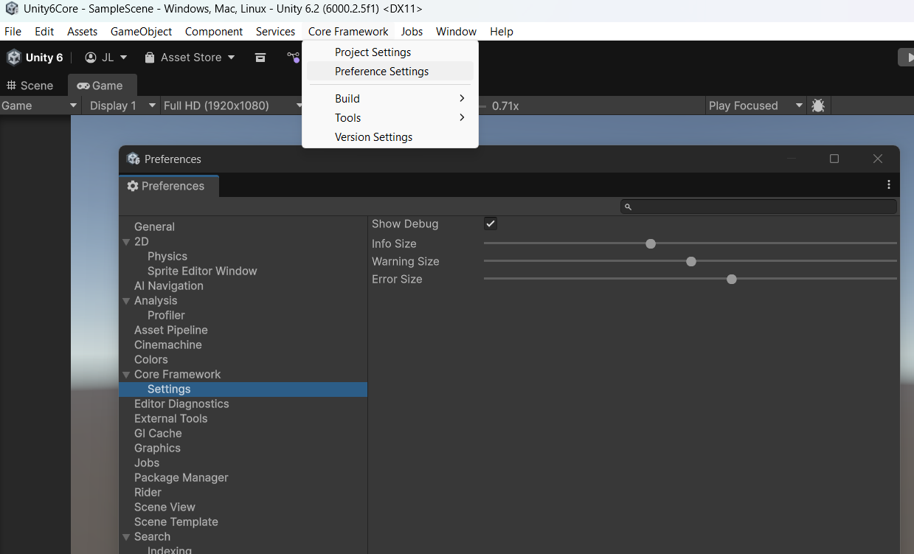

CoreFrameworkPreferences
Source: ./Editor/Settings/CoreFrameworkPreferences.cs
Overview
Defines the Unity Preferences (per-developer) for CoreFramework editor tooling. These values appear under:
Edit → Preferences → Core Framework → Settings
They expose sliders and toggles for debug display (Show Debug, Info Size, Warning Size, Error Size) but are currently not used by CoreFramework at runtime. They are designed to be read from your own scripts if you want to size and filter messages consistently.
Current Fields
- Show Debug — toggle to enable or disable debug output.
- Info Size — slider for informational message size.
- Warning Size — slider for warning message size.
- Error Size — slider for error message size.

Suggested Usage
Although CoreFramework itself does not yet consume these settings at runtime, you can use them in your own components. One approach is to create an abstract base MonoBehaviour with helper logging methods that respect the preferences:
using UnityEngine;
/// <summary>
/// Base MonoBehaviour that logs messages according to CoreFrameworkSettings preferences.
/// </summary>
public abstract class CoreFrameworkDebugBehaviour : MonoBehaviour
{
protected void LogInfo(string message, Object target = null)
{
if (CoreFrameworkSettings.ShowDebug)
{
// Note: Unity rich text uses closing tags like </size>
// Add any other rich text formating or othe info that you might want to use with the message.
Debug.Log($"<size={CoreFrameworkSettings.InfoSize}><color=blue>Info:</color> {message}</size>", target);
}
}
protected void LogWarning(string message, Object target = null)
{
// remove the if statment to always show warnings
if (CoreFrameworkSettings.ShowDebug)
{
Debug.LogWarning($"<size={CoreFrameworkSettings.WarningSize}><color=orange>Warning:</color> {message}</size>", target);
}
}
protected void LogError(string message, Object target = null)
{
Debug.LogError($"<size={CoreFrameworkSettings.ErrorSize}><color=red>Error:</color> {message}</size>", target);
}
}
You can then use this class in your own scripts to log messages according to the preferences.
public class MyComponent : CoreFrameworkDebugBehaviour
{
void Update()
{
// Example of using the base logging methods
LogInfo("Some informational message about Update()");
}
}
Behavior Notes
- Stored per-developer (EditorPrefs), not committed to the repo.
- Used by CoreFramework editor tooling; runtime access is via
CoreFrameworkSettings.